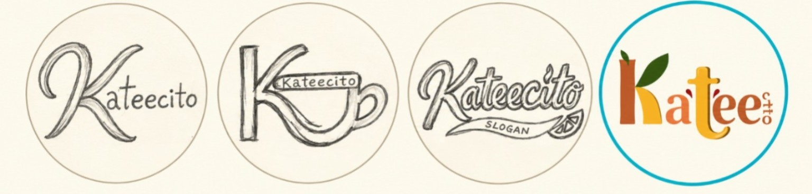
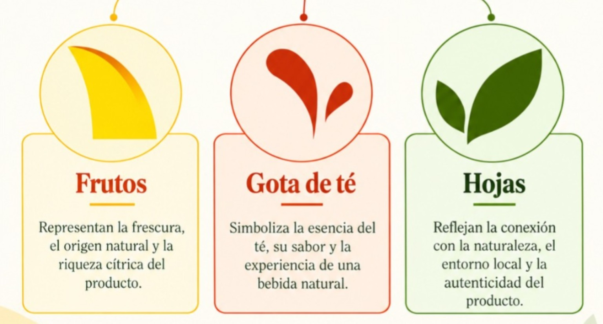
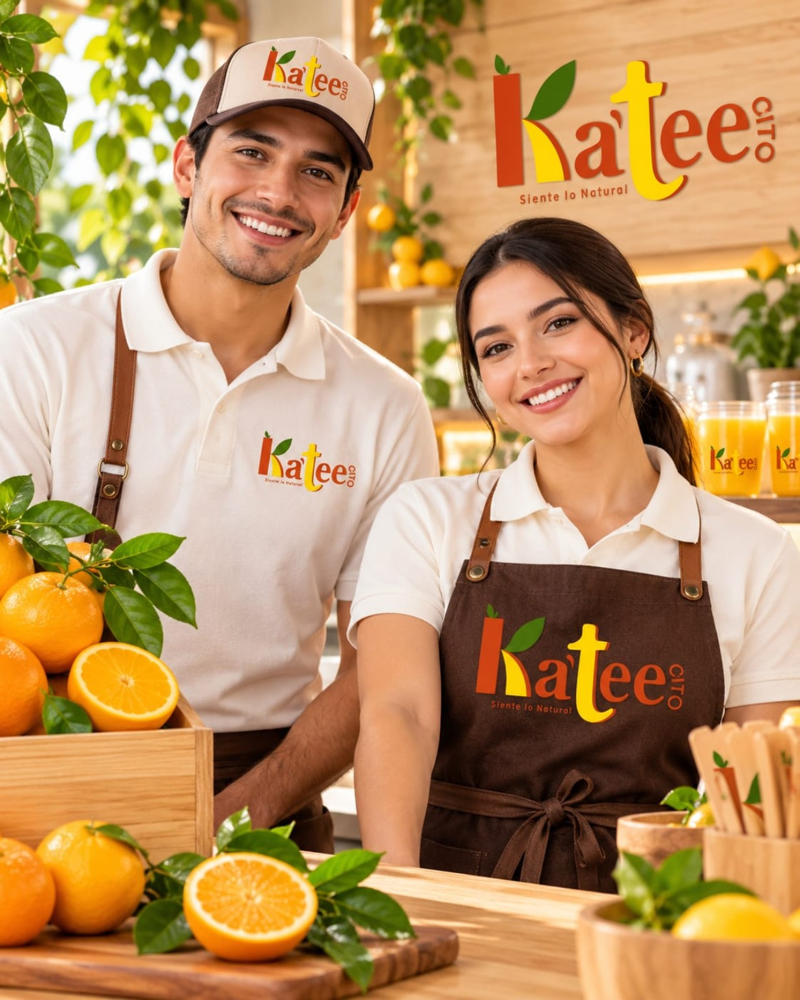
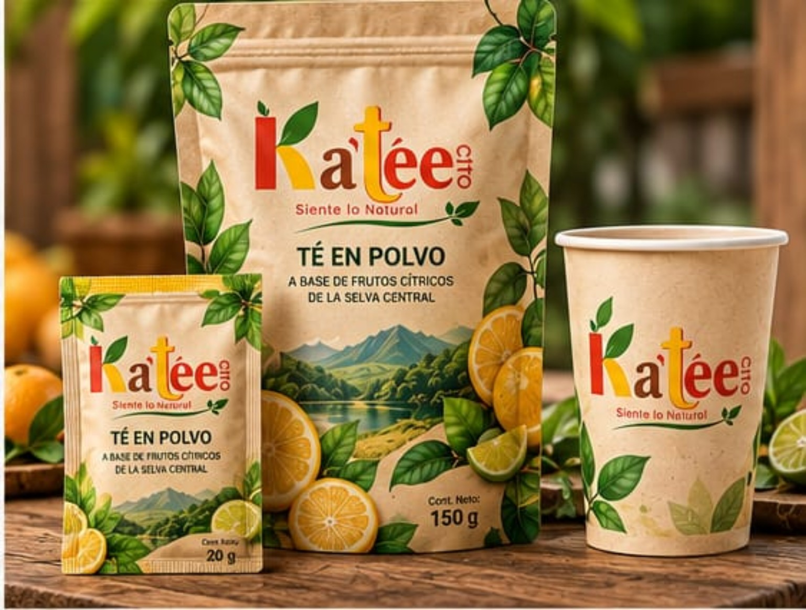
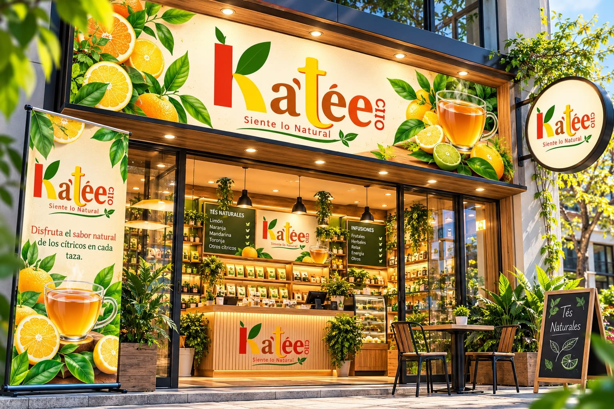
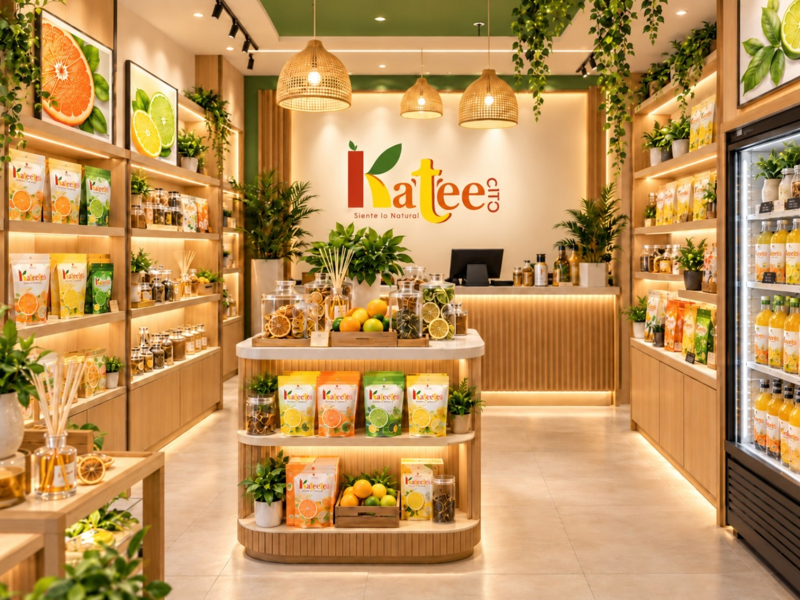

KA'TÉE CITO
Identidad visual
Información organizada de la identidad visual de Ka'tée Cito.
Elección del logotipo para Ka’tée Cito

Logotipo seleccionado (final)
Colores corporativos
AmarilloOptimismo y creatividad
Verde oscuroNaturaleza y origen regional
Rojo puroFuerza y energía
AnaranjadoCercanía y vitalidad
Tipografía
a – ee: Century751 No2 BT
Cito: Candara
Slogan: Geometr212 BkCn BT
Elementos gráficos

Uniformes

Empaques

Letreros

Decoración
